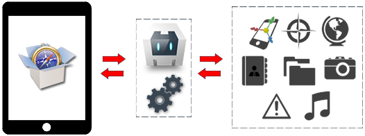

CARACTERISTICAS
Phonegap

PhoneGap. PhoneGap es un framework para el desarrollo de aplicaciones nativas de sistemas operativos móviles, haciendo uso de tecnologías web como HTML5, CSS3 y JavaScript. Con PhoneGap es posible desarrollar aplicaciones para los siguientes sistemas operativos:
- Android
- iOS
- Windows Phone
- BlackBerry OS
- Web OS
- Symbiam
- Bada
Content
Rafael Simancas